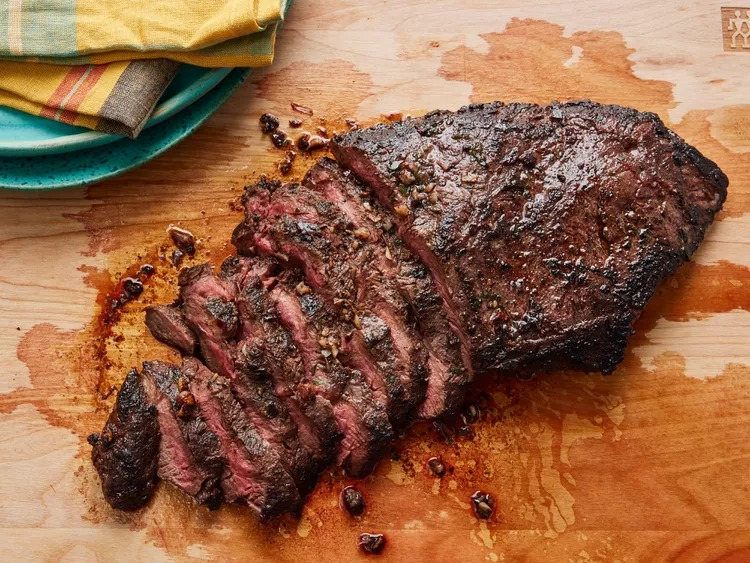

Steak

Description
Flat-Iron Steak made with olive oil, garlic, parsley, rosemary, chives, red wine, salt, pepper and mustard power to ensure optimum flavor. Cooked on a nonstick skillet over medium-high heat.
Ingredients
- 1 (2lbs) flat iron steak
- 2 1/2 tablespoons olive oil
- 2 cloves minced garlic
- 1 teaspoon chopped fresh parsley
- 1/4 teaspoon chopped fresh rosemary
- 1/2 teaspoon chopped fresh chives
- 1/4 cup Cabernet Sauvignon (or other dry red wine>
- 1/2 teaspoon salt
- 3/4 teaspoon ground black pepper
- 1/4 teaspoon dry mustard powder
Steps
- Place steak in large resealable bag
- Stir together olive oil, garlic, parsley, rosemary, chives, red wine, salt, pepper and mustard powder in a small bowl
- Pour marinade over steak in bag.
- Press out as much air as you can and seal the bag.
- Marinate in the refrigerator for 2-3 hours.
- Heat a nonstick skillet over mid-high heat. Sear and cook steak for 3-4 minutes each side or to your desired degree of doneness.
- Discard marinade and allow steak to rest for 5 minutes.
- Serve the steak.
Return to Homepage